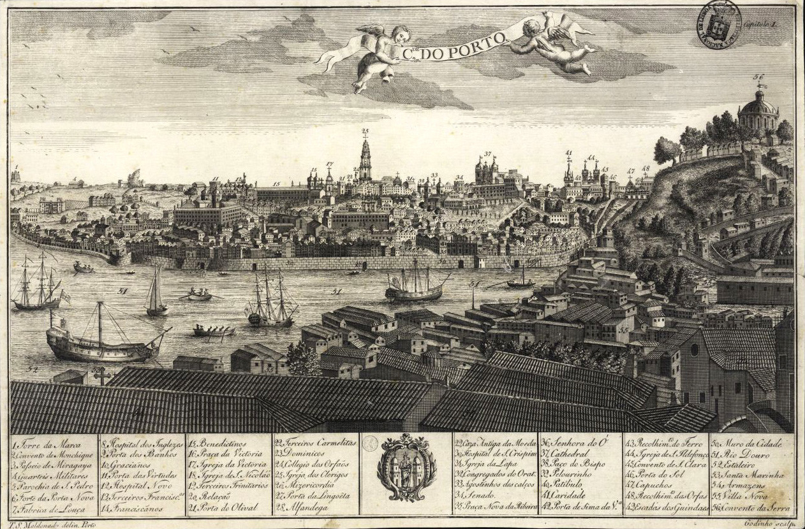
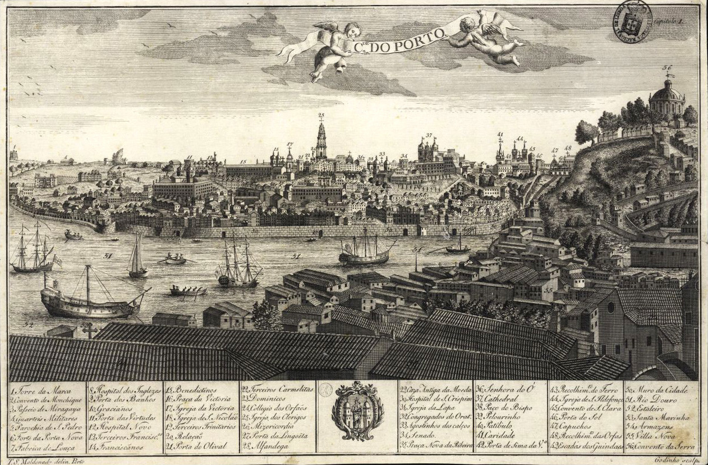
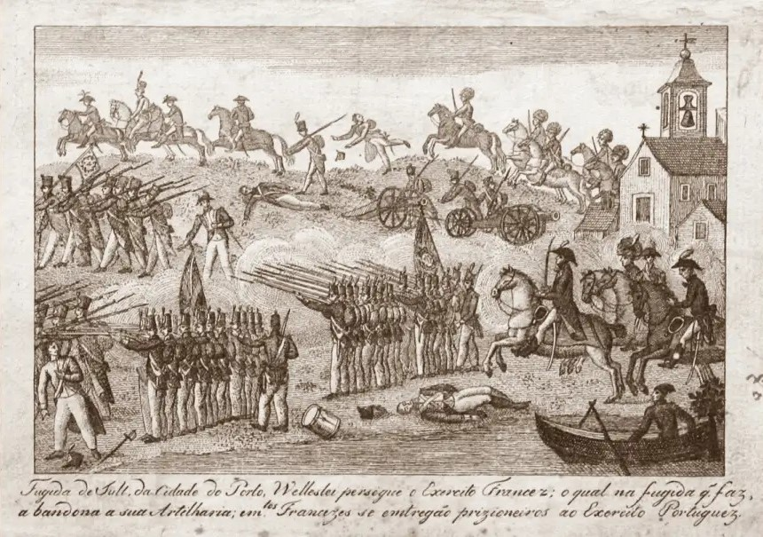
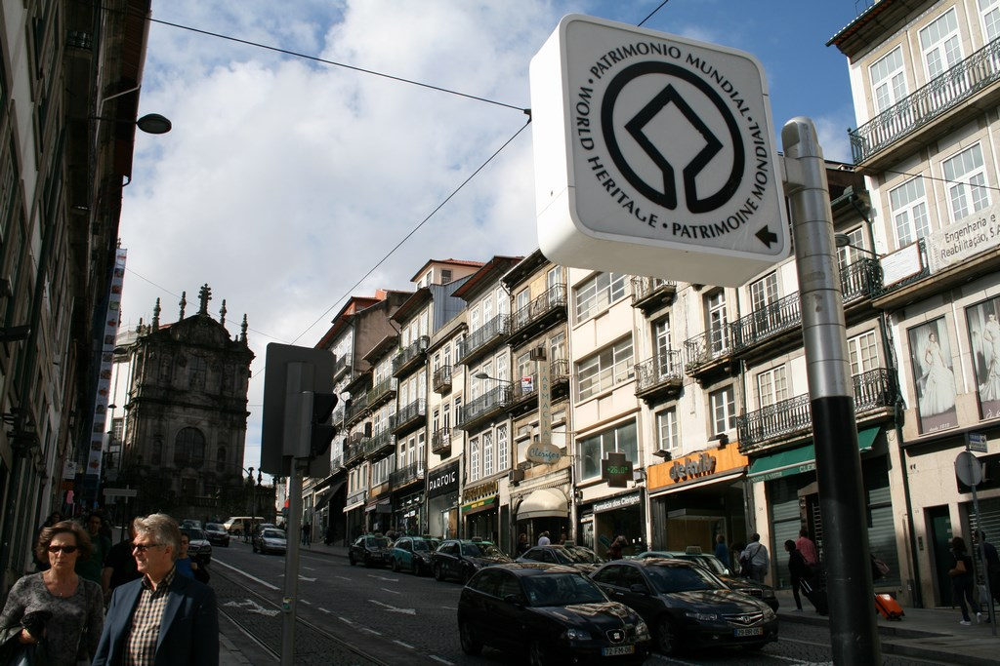
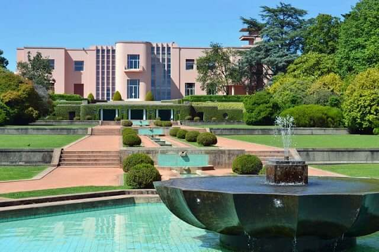
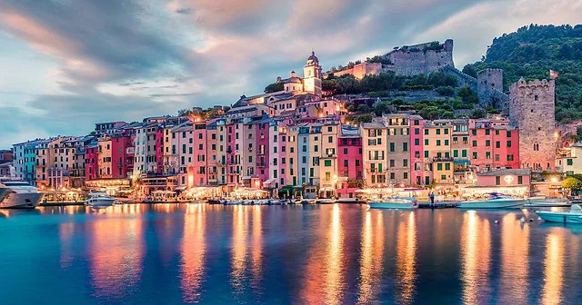
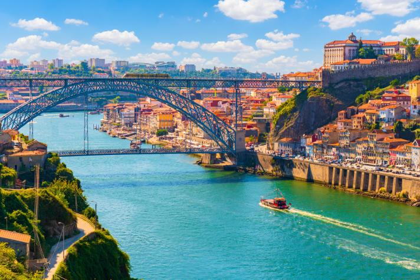

1120
Porto's legendary foundation. Although Porto's history probably dates back to antiquity, this date is often cited as the city's foundation.

Porto's legendary foundation. Although Porto's history probably dates back to antiquity, this date is often cited as the city's foundation.
Construction begins on the Dom Luís I Bridge. This emblematic bridge was designed by engineer Théophile Seyrig, a disciple of Gustave Eiffel, and is one of the city's symbols.

Siege of Porto. Porto played a crucial role during the Portuguese Civil War, known as the Miguelite War, when liberal forces resisted the siege of absolutist forces.
Porto is designated European Capital of Culture. This gave a new impetus to the city, drawing attention to its rich cultural heritage.

The inclusion of Porto's historic center on UNESCO's World Heritage List. This recognizes the exceptional value of the city's historic center.
Inauguration of the Serralves Museum of Contemporary Art. The museum has become an important center for contemporary art, contributing to Porto's art scene.
Porto elected best European destination. This recognition has helped boost tourism in the region.
The city continues to develop as a dynamic cultural, economic and tourist center.
